IPTCPhotoSender for the Press
カメラから無線で写真を受信し、IPTC メタデータ（写真説明）を付けて FTP で送稿するまでを、iPhone / iPad 1 台で完結できる報道・スポーツフォトグラファー向けアプリです。本ガイドは各タブの操作を順に説明します。
送稿する写真を登録し、メタデータを付けて送信する中心のタブです。
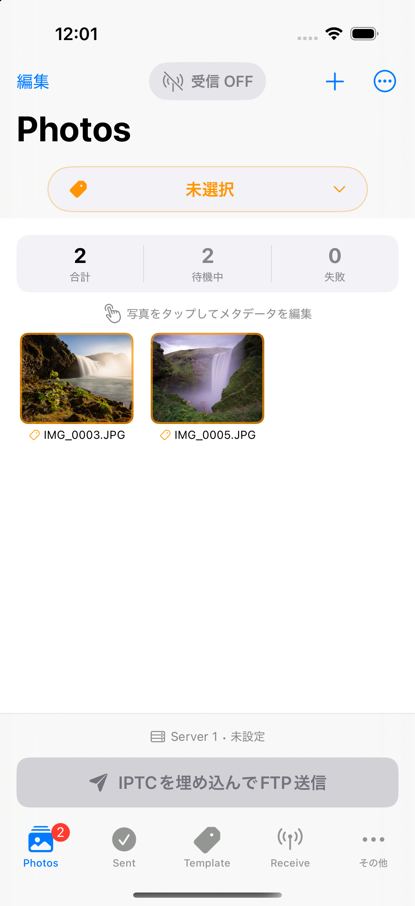
写真を追加 ／ ＋ ボタン
送信する写真をタブに登録するためのボタンです。登録写真が 0 枚のときは画面中央に「写真を追加」が表示されます。1 枚でも登録されると「写真を追加」は消え、以降は右上隅の「＋」ボタンから登録します。
編集（左上隅）
タブ上の写真を選択して、選んだ写真の削除、テンプレートの適用、選択した写真だけの送信（選択送信）ができます。1 枚ずつの送信は、写真をタップして開く編集画面からも行えます。
…（右上隅）
タブ上にあるすべての写真へ同じテンプレートを一括で適用します。また、すべての写真を削除することもできます。
受信（中央上）
カメラから送信される写真を受信します（内蔵サーバーの動作をオンにします）。
テンプレート選択ボタン（中央 Receive の下）
Receive で写真を受信する際、ここで選んだテンプレートが適用された状態で取り込まれます。（受信後も、Edit から何度でも別のテンプレートを適用し直せます。）
IPTCを埋め込んでFTP送信 ボタン（下段タブの上）
写真に適用されているテンプレート（写真説明メタデータ）を最終確定し、FTP で送信を開始します。このボタンの上には、現在選択されている FTP 送信先が表示されています。
登録された写真のアイコンをタップすると、その写真の編集画面が開きます。
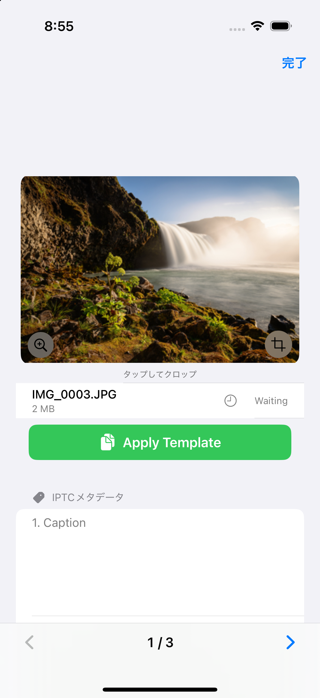
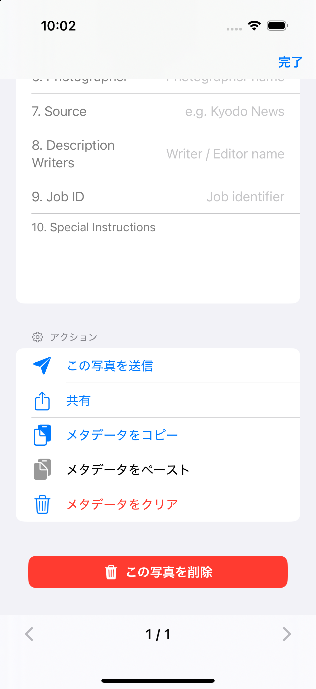
{Seq}／{Jseq}）は各写真固有の値が保たれます（上書きされません）。連番は送信時に写真ごとに振られます。Photos タブで送信が完了した写真が、ここに移動します。再送できるほか、再送の際に写真説明をはじめとするメタデータを改めて編集することもできます。基本的に Photos タブの編集画面と同じことができます。
※ あくまでも「再送」なので、トリミングはできないようにしています。トリミングできてしまうと、再送ではなく新規写真の送信になってしまうためです。
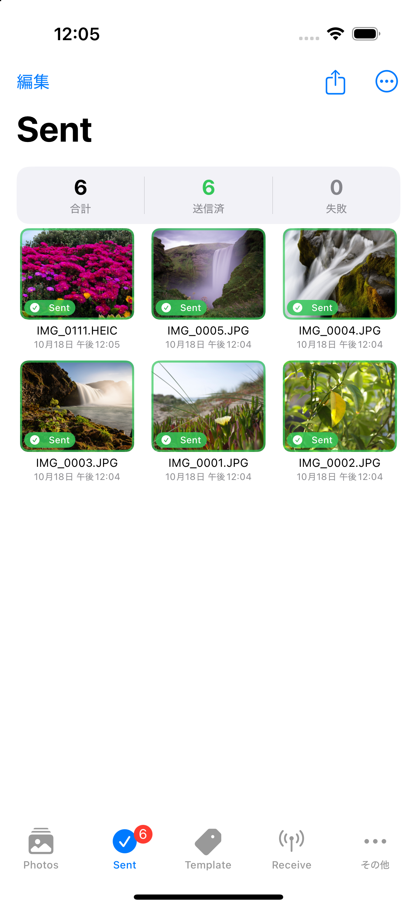
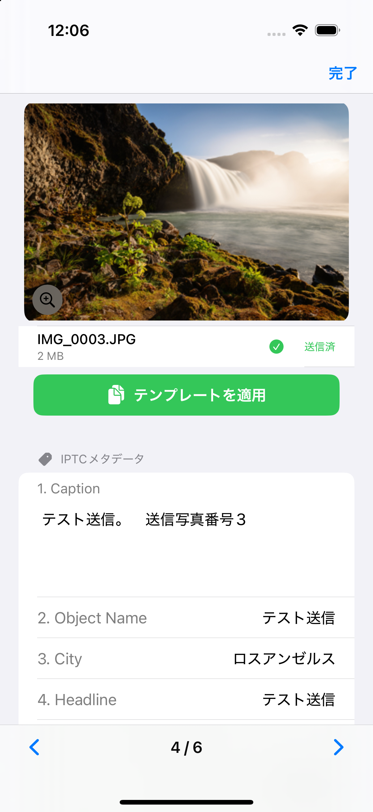
まず下方へスクロールし、Template Field（全 20 項目）のうち、自分に必要な項目へ内容を入力します。
右側の カスタマイズ ボタンから、項目の編集画面を開けます。20 項目のうち、左のチェックで「普段表示する項目」を選べます。登録後にまず触ることのない固定の項目はチェックを外しておくと、普段は見えなくなってテンプレートがスッキリし、誤編集も防げます。項目の並び順もここで変更できます。
編集したテンプレートは、上へスクロールして Template 欄の 現在の内容をテンプレートとして保存 ボタンから名前を付けて保存できます。テンプレートは 75 個まで登録できます。また、保存しているすべてのテンプレートを 1 つのファイルとして書き出し、バックアップしたり共有したりできます。
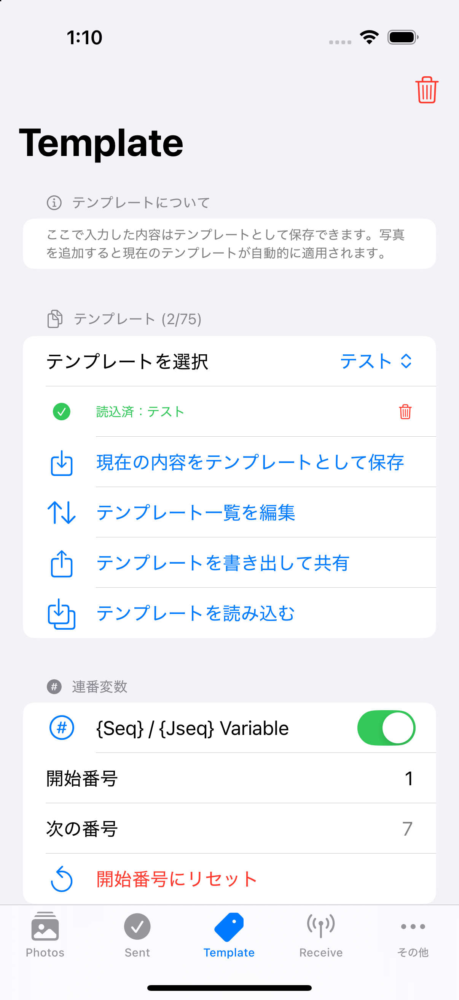
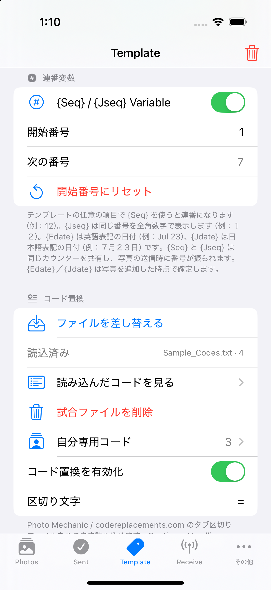
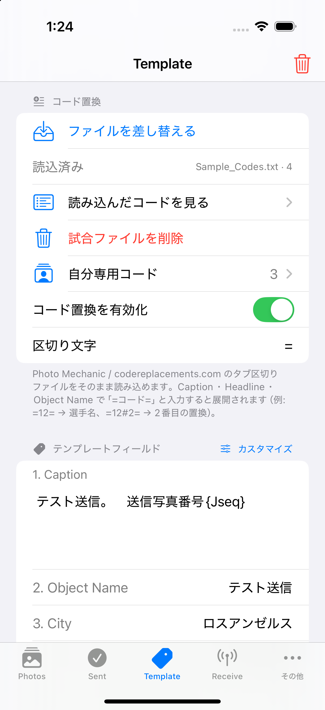
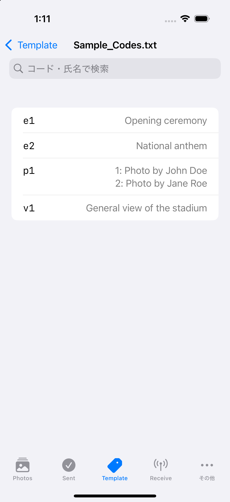
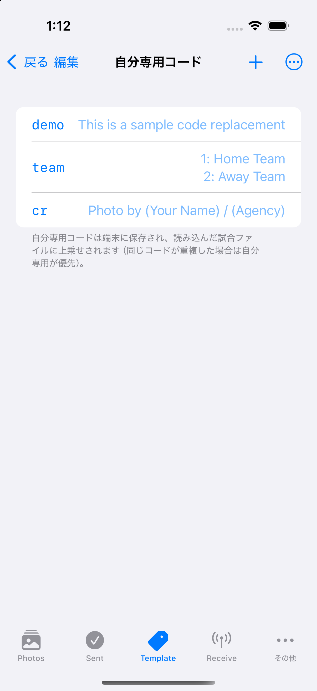
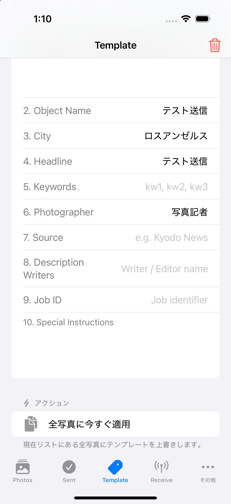
続き番号を振る変数を設定できます。使用・不使用はスイッチで切り替えられ、テンプレートのどの項目の中でも使用できます。
{Seq}、全角数字で入れる場合は {Jseq} を使います。Photo Mechanic などで使えるコード置換サービスを利用できます。コードはダウンロードして使えるのはもちろん、そのコードに自分で作ったコードを足して使うことが、アプリだけで完結してできます。自作のコードは共有・保存・並べ替えができます。
テンプレートに使うと、実際の写真へ適用するまではコード表示のままなので、変数のような使い方もでき、活用法はユーザーのアイデア次第で広がります。Photos タブや Sent タブで個別の写真に使う場合は、コードを入れた瞬間に変換されます。
コード変換の「挟み文字」は初期設定では = ですが、自分の使いやすい文字に変更できます。
カメラから写真を受信するためのサーバー情報を設定するタブです。
3 つのページがあります。
An all-in-one wireless workflow for press and sports photographers: receive photos from your camera, add IPTC metadata (captions), and send them to your picture desk over FTP — all on a single iPhone or iPad. This guide walks through each tab in turn.
The main tab, where you register the photos to file, add their metadata, and send them.
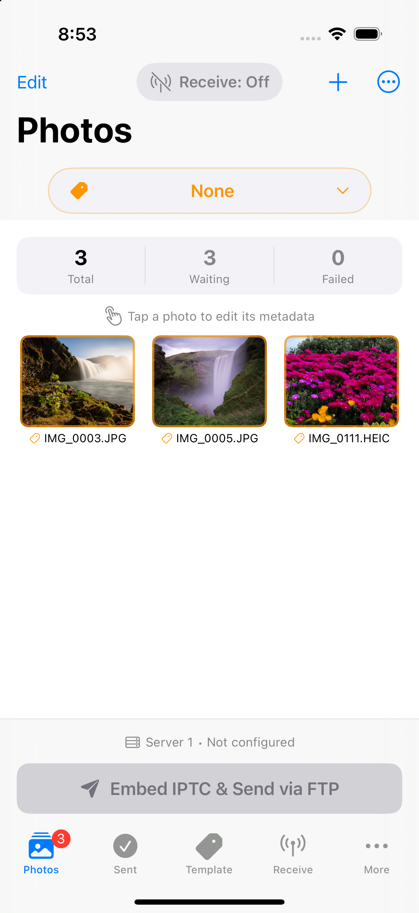
Add Photos / the "+" button
Buttons for registering the photos you want to send. When no photos are registered, "Add Photos" appears in the center of the screen. Once at least one photo is registered, "Add Photos" disappears and you add more using the "+" button in the top-right corner.
Edit (top-left)
Select photos in the tab to delete them, apply a template to them, or send only the selected photos (Send Selected). You can also send a single photo from the editing screen that opens when you tap a photo.
… (top-right)
Applies one template to all photos currently in the tab at once. You can also delete all photos here.
Receive (top-center)
Receives photos sent from your camera (turns the built-in server on).
Template selector (below Receive, center)
When you receive photos with Receive, they are imported with the template selected here already applied. (After receiving, you can re-apply a different template as many times as you like from Edit.)
Embed IPTC & Send via FTP button (above the bottom tab bar)
Finalizes the template (caption metadata) applied to your photos and starts sending over FTP. The FTP destination currently selected is shown just above this button.
Tap a registered photo's thumbnail to open its editing screen.
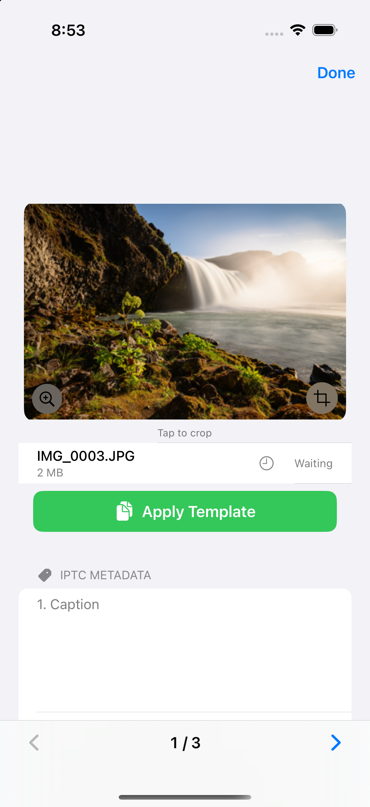
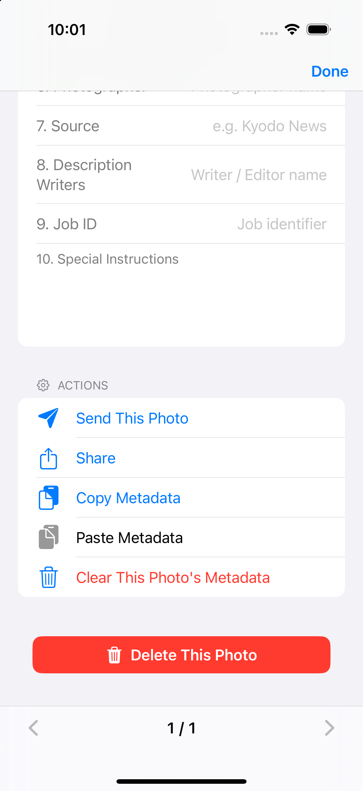
{Seq} / {Jseq}) keep each photo's own values (they are not overwritten). Sequence numbers are assigned per photo at the moment of sending.Photos that finished sending from the Photos tab move here. You can resend them, and you can re-edit the caption and other metadata before resending. In general you can do the same things as on the Photos editing screen.
Note: Because this is strictly a resend, cropping is disabled. If cropping were allowed, it would no longer be a resend but the sending of a new, different photo.
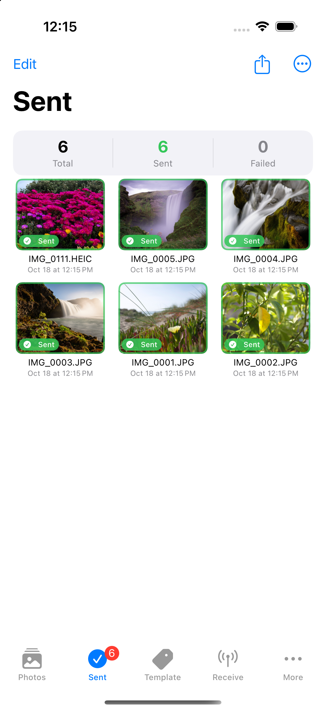
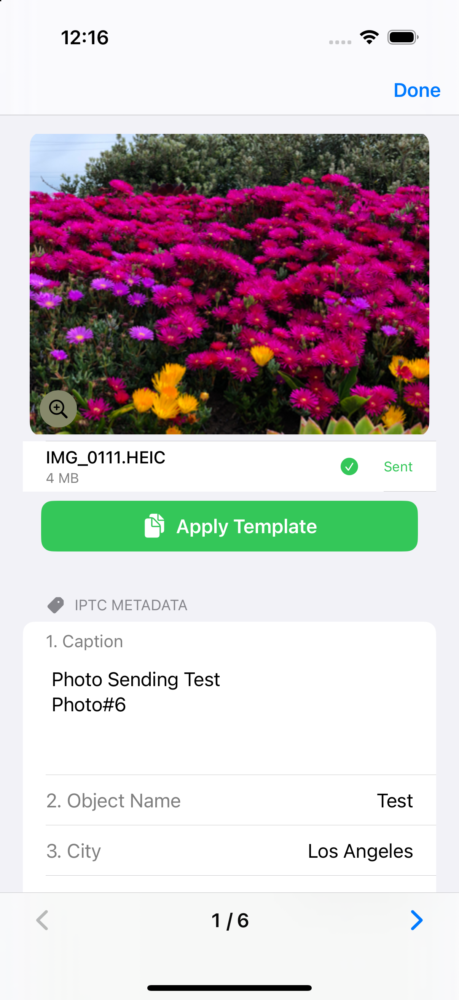
First, scroll down and enter content into the Template Fields (20 in total) that you need.
On the right, the Customize button opens the field editor. Using the checkboxes on the left, you choose which of the 20 fields are normally visible. Unchecking fixed fields you rarely touch after setup keeps them hidden — this makes the template tidier and helps prevent accidental edits. You can also change the field order here.
To save an edited template, scroll back up and use the Save button in the Template section to save it with a name. You can store up to 75 templates. You can also export all of your saved templates as a single file to back them up or share them.
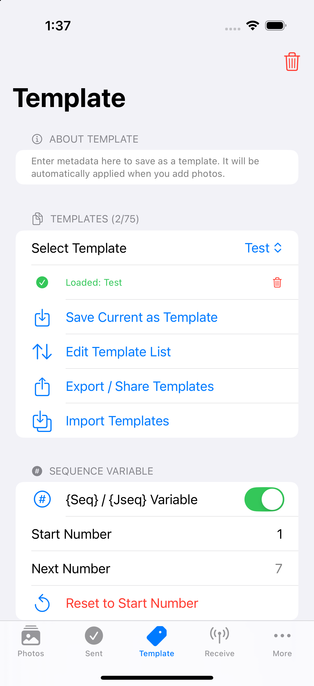
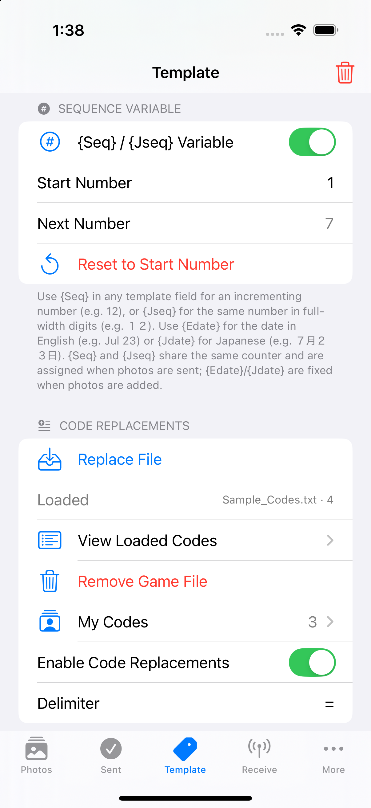
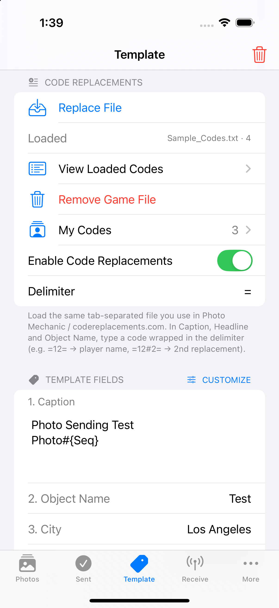
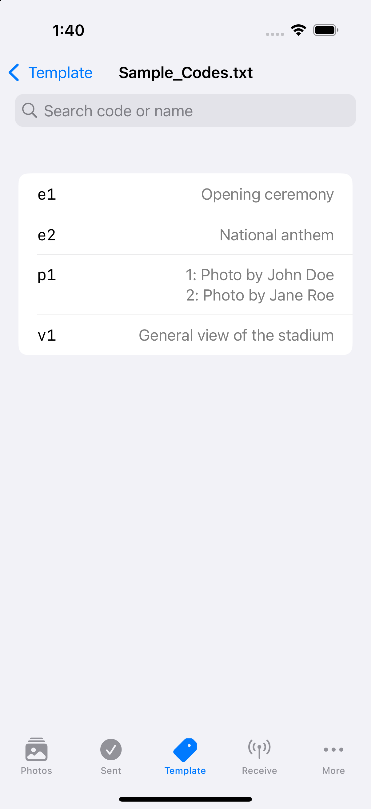
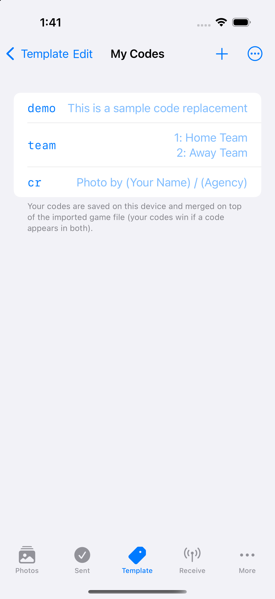
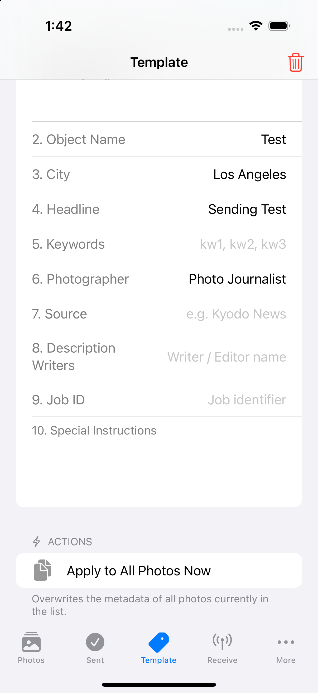
Lets you set up an incrementing number. Turn it on or off with the switch; it can be used inside any template field.
{Seq} for half-width digits, or {Jseq} for full-width digits.You can use the same code-replacement service available in tools like Photo Mechanic. You can of course download and use code files, and you can also add your own codes on top of them — entirely within the app. Your own codes can be shared, saved, and reordered.
When used in a template, a code stays shown as the code until it is applied to an actual photo, so it can also be used like a variable — the possibilities are up to your own ideas. When used on an individual photo in the Photos or Sent tab, a code is converted the moment you type it.
The delimiter that wraps a code defaults to =, but you can change it to whatever character is easiest for you.
The tab for setting up the server information used to receive photos from your camera.
There are three pages:
Un flusso di lavoro wireless tutto-in-uno per fotografi di cronaca e sportivi: ricevi le foto dalla fotocamera, aggiungi i metadati IPTC (didascalie) e inviale alla redazione via FTP, tutto su un solo iPhone o iPad. Questa guida illustra una per una ciascuna scheda.
La scheda principale, dove registri le foto da inviare, aggiungi i loro metadati e le invii.
Add Photos / il pulsante «+»
Pulsanti per registrare le foto che vuoi inviare. Quando non è registrata alcuna foto, al centro dello schermo compare «Add Photos». Appena viene registrata almeno una foto, «Add Photos» scompare e per aggiungerne altre usi il pulsante «+» nell'angolo in alto a destra.
Edit (in alto a sinistra)
Seleziona le foto nella scheda per eliminarle, applicare loro un modello (template) o inviare solo le foto selezionate (Send Selected). Puoi anche inviare una singola foto dalla schermata di modifica che si apre toccando una foto.
… (in alto a destra)
Applica un unico modello a tutte le foto attualmente nella scheda in una sola volta. Da qui puoi anche eliminare tutte le foto.
Receive (in alto al centro)
Riceve le foto inviate dalla fotocamera (attiva il server integrato).
Selettore dei modelli (sotto Receive, al centro)
Quando ricevi le foto con Receive, vengono importate con il modello qui selezionato già applicato. (Dopo la ricezione, puoi riapplicare un modello diverso tutte le volte che vuoi da Edit.)
Pulsante Embed IPTC & Send via FTP (sopra la barra delle schede in basso)
Finalizza il modello (metadati della didascalia) applicato alle foto e avvia l'invio via FTP. La destinazione FTP attualmente selezionata è mostrata appena sopra questo pulsante.
Tocca la miniatura di una foto registrata per aprire la sua schermata di modifica.
{Seq} / {Jseq}) mantengono i valori propri di ciascuna foto (non vengono sovrascritti). I numeri progressivi sono assegnati per foto al momento dell'invio.Le foto che hanno terminato l'invio dalla scheda Photos si spostano qui. Puoi reinviarle e puoi modificare di nuovo la didascalia e gli altri metadati prima di reinviarle. In generale puoi fare le stesse cose della schermata di modifica di Photos.
Nota: poiché si tratta esclusivamente di un reinvio, il ritaglio è disattivato. Se il ritaglio fosse consentito, non sarebbe più un reinvio ma l'invio di una foto nuova e diversa.
Per prima cosa, scorri verso il basso e inserisci il contenuto nei Campi del modello (20 in totale) che ti servono.
A destra, il pulsante Customize apre l'editor dei campi. Con le caselle di spunta a sinistra scegli quali dei 20 campi sono normalmente visibili. Deselezionare i campi fissi che tocchi raramente dopo la configurazione li mantiene nascosti: così il modello resta più ordinato e si evitano modifiche accidentali. Qui puoi anche cambiare l'ordine dei campi.
Per salvare un modello modificato, scorri di nuovo verso l'alto e usa il pulsante Save nella sezione Template per salvarlo con un nome. Puoi memorizzare fino a 75 modelli. Puoi anche esportare tutti i modelli salvati come un unico file per effettuarne il backup o condividerli.
Permette di impostare un numero incrementale. Attivalo o disattivalo con l'interruttore; può essere usato all'interno di qualsiasi campo del modello.
{Seq} per cifre a mezza larghezza, o {Jseq} per cifre a piena larghezza.Puoi usare lo stesso servizio di sostituzione di codice disponibile in strumenti come Photo Mechanic. Puoi ovviamente scaricare e usare file di codici, e puoi anche aggiungere i tuoi codici oltre a quelli, interamente nell'app. I tuoi codici possono essere condivisi, salvati e riordinati.
Quando è usato in un modello, un codice resta mostrato come codice finché non viene applicato a una foto reale, quindi può essere usato anche come una variabile: le possibilità dipendono dalle tue idee. Quando è usato su una singola foto nella scheda Photos o Sent, un codice viene convertito nel momento in cui lo digiti.
Il delimitatore che racchiude un codice è = per impostazione predefinita, ma puoi cambiarlo con il carattere che ti risulta più comodo.
La scheda per configurare le informazioni del server usate per ricevere le foto dalla fotocamera.
Ci sono tre pagine:
Un flujo de trabajo inalámbrico todo en uno para fotógrafos de prensa y deportivos: recibe las fotos desde tu cámara, añade metadatos IPTC (pies de foto) y envíalas a la redacción por FTP, todo en un solo iPhone o iPad. Esta guía recorre cada pestaña una por una.
La pestaña principal, donde registras las fotos que vas a enviar, añades sus metadatos y las envías.
Add Photos / el botón «+»
Botones para registrar las fotos que quieres enviar. Cuando no hay ninguna foto registrada, en el centro de la pantalla aparece «Add Photos». En cuanto se registra al menos una foto, «Add Photos» desaparece y para añadir más usas el botón «+» de la esquina superior derecha.
Edit (arriba a la izquierda)
Selecciona fotos en la pestaña para eliminarlas, aplicarles una plantilla o enviar solo las fotos seleccionadas (Send Selected). También puedes enviar una sola foto desde la pantalla de edición que se abre al tocar una foto.
… (arriba a la derecha)
Aplica una misma plantilla a todas las fotos que hay en la pestaña de una sola vez. Desde aquí también puedes eliminar todas las fotos.
Receive (arriba en el centro)
Recibe las fotos enviadas desde tu cámara (activa el servidor integrado).
Selector de plantillas (debajo de Receive, en el centro)
Cuando recibes fotos con Receive, se importan con la plantilla seleccionada aquí ya aplicada. (Después de recibir, puedes volver a aplicar una plantilla distinta tantas veces como quieras desde Edit.)
Botón Embed IPTC & Send via FTP (encima de la barra de pestañas inferior)
Finaliza la plantilla (metadatos del pie de foto) aplicada a tus fotos e inicia el envío por FTP. El destino FTP seleccionado actualmente se muestra justo encima de este botón.
Toca la miniatura de una foto registrada para abrir su pantalla de edición.
{Seq} / {Jseq}) conservan los valores propios de cada foto (no se sobrescriben). Los números de secuencia se asignan por foto en el momento del envío.Las fotos que terminaron de enviarse desde la pestaña Photos se mueven aquí. Puedes reenviarlas, y puedes volver a editar el pie de foto y otros metadatos antes de reenviarlas. En general puedes hacer lo mismo que en la pantalla de edición de Photos.
Nota: como esto es estrictamente un reenvío, el recorte está desactivado. Si se permitiera recortar, ya no sería un reenvío, sino el envío de una foto nueva y distinta.
Primero, desplázate hacia abajo e introduce el contenido en los Campos de la plantilla (20 en total) que necesites.
A la derecha, el botón Customize abre el editor de campos. Con las casillas de la izquierda eliges cuáles de los 20 campos son normalmente visibles. Desmarcar los campos fijos que apenas tocas tras la configuración los mantiene ocultos: así la plantilla queda más ordenada y se evitan ediciones accidentales. Aquí también puedes cambiar el orden de los campos.
Para guardar una plantilla editada, vuelve a desplazarte hacia arriba y usa el botón Save de la sección Template para guardarla con un nombre. Puedes almacenar hasta 75 plantillas. También puedes exportar todas tus plantillas guardadas como un solo archivo para hacer una copia de seguridad o compartirlas.
Permite configurar un número que se incrementa. Actívalo o desactívalo con el interruptor; se puede usar dentro de cualquier campo de la plantilla.
{Seq} para dígitos de ancho medio, o {Jseq} para dígitos de ancho completo.Puedes usar el mismo servicio de sustitución de código disponible en herramientas como Photo Mechanic. Por supuesto puedes descargar y usar archivos de códigos, y también puedes añadir tus propios códigos además de esos, todo dentro de la app. Tus propios códigos se pueden compartir, guardar y reordenar.
Cuando se usa en una plantilla, un código se sigue mostrando como código hasta que se aplica a una foto real, por lo que también puede usarse como una variable: las posibilidades dependen de tus ideas. Cuando se usa en una foto individual en la pestaña Photos o Sent, un código se convierte en el momento en que lo escribes.
El delimitador que envuelve un código es = de forma predeterminada, pero puedes cambiarlo por el carácter que te resulte más cómodo.
La pestaña para configurar la información del servidor que se usa para recibir fotos desde tu cámara.
Hay tres páginas:
보도·스포츠 포토그래퍼를 위한 올인원 무선 워크플로우입니다. 카메라에서 사진을 받아 IPTC 메타데이터(사진 설명)를 넣고 FTP로 데스크에 전송하는 과정을 iPhone 또는 iPad 한 대로 완결할 수 있습니다. 이 가이드는 각 탭의 조작을 순서대로 설명합니다.
전송할 사진을 등록하고 메타데이터를 넣어 전송하는 중심 탭입니다.
Add Photos / 「+」 버튼
전송할 사진을 탭에 등록하는 버튼입니다. 등록된 사진이 0장일 때는 화면 중앙에 「Add Photos」가 표시됩니다. 한 장이라도 등록되면 「Add Photos」는 사라지고, 이후에는 오른쪽 위 모서리의 「+」 버튼으로 추가합니다.
Edit (왼쪽 위 모서리)
탭의 사진을 선택하여 선택한 사진 삭제, 템플릿 적용, 선택한 사진만 전송(Send Selected)을 할 수 있습니다. 한 장씩 전송은 사진을 탭하여 여는 편집 화면에서도 할 수 있습니다.
… (오른쪽 위 모서리)
탭에 있는 모든 사진에 같은 템플릿을 한 번에 일괄 적용합니다. 또한 모든 사진을 삭제할 수도 있습니다.
Receive (중앙 위)
카메라에서 전송되는 사진을 받습니다(내장 서버를 켭니다).
템플릿 선택 버튼 (중앙 Receive 아래)
Receive로 사진을 받을 때, 여기서 선택한 템플릿이 적용된 상태로 가져옵니다. (받은 후에도 Edit에서 다른 템플릿을 몇 번이든 다시 적용할 수 있습니다.)
Embed IPTC & Send via FTP 버튼 (하단 탭 바 위)
사진에 적용된 템플릿(사진 설명 메타데이터)을 최종 확정하고 FTP로 전송을 시작합니다. 이 버튼 바로 위에는 현재 선택된 FTP 전송 대상이 표시됩니다.
등록된 사진의 아이콘을 탭하면 그 사진의 편집 화면이 열립니다.
{Seq} / {Jseq})은 각 사진 고유의 값이 유지됩니다(덮어쓰이지 않습니다). 연번은 전송 시 사진마다 매겨집니다.Photos 탭에서 전송이 완료된 사진이 이곳으로 이동합니다. 다시 전송할 수 있을 뿐 아니라, 재전송 시 사진 설명을 비롯한 메타데이터를 다시 편집할 수도 있습니다. 기본적으로 Photos 탭의 편집 화면과 같은 작업을 할 수 있습니다.
※ 어디까지나 「재전송」이므로 자르기는 할 수 없도록 되어 있습니다. 자르기가 가능하면 재전송이 아니라 새로운 사진의 전송이 되어 버리기 때문입니다.
먼저 아래로 스크롤하여 Template Field(전 20개 항목) 중 자신에게 필요한 항목에 내용을 입력합니다.
오른쪽의 Customize 버튼에서 항목 편집 화면을 열 수 있습니다. 왼쪽 체크로 20개 항목 중 「평소 표시할 항목」을 선택할 수 있습니다. 설정 후 거의 손대지 않는 고정 항목은 체크를 해제해 두면 평소에는 보이지 않아 템플릿이 깔끔해지고 오편집도 방지됩니다. 항목의 순서도 여기서 변경할 수 있습니다.
편집한 템플릿은 위로 스크롤하여 Template 영역의 Save 버튼에서 이름을 붙여 저장할 수 있습니다. 템플릿은 75개까지 등록할 수 있습니다. 또한 저장한 모든 템플릿을 하나의 파일로 내보내 백업하거나 공유할 수 있습니다.
연속 번호를 매기는 변수를 설정할 수 있습니다. 사용·미사용은 스위치로 전환하며, 템플릿의 어느 항목 안에서도 사용할 수 있습니다.
{Seq}, 전각 숫자로 넣으려면 {Jseq}를 사용합니다.Photo Mechanic 등에서 사용할 수 있는 코드 치환 서비스를 이용할 수 있습니다. 코드를 다운로드하여 사용하는 것은 물론, 그 코드에 직접 만든 코드를 더해 사용하는 것을 앱만으로 완결할 수 있습니다. 직접 만든 코드는 공유·저장·정렬할 수 있습니다.
템플릿에 사용하면 실제 사진에 적용하기 전까지는 코드 표시 그대로이므로 변수처럼 사용할 수도 있어, 활용법은 사용자의 아이디어에 따라 넓어집니다. Photos 탭이나 Sent 탭에서 개별 사진에 사용할 경우에는 코드를 넣는 순간 변환됩니다.
코드 변환의 「감싸는 문자」는 기본 설정에서는 =이지만, 자신이 쓰기 편한 문자로 변경할 수 있습니다.
카메라에서 사진을 받기 위한 서버 정보를 설정하는 탭입니다.
3개의 페이지가 있습니다.